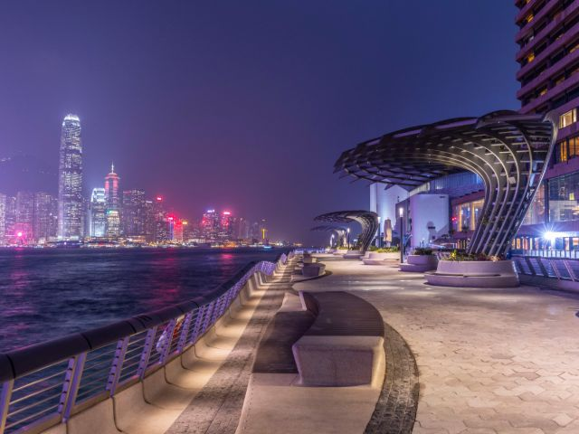
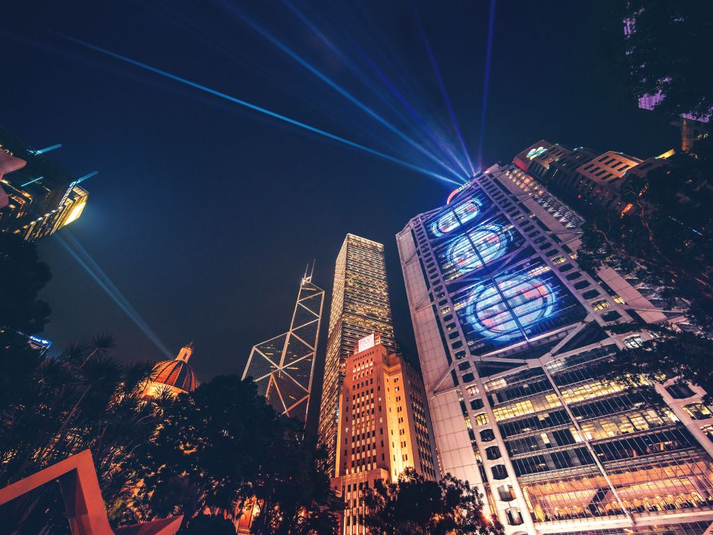
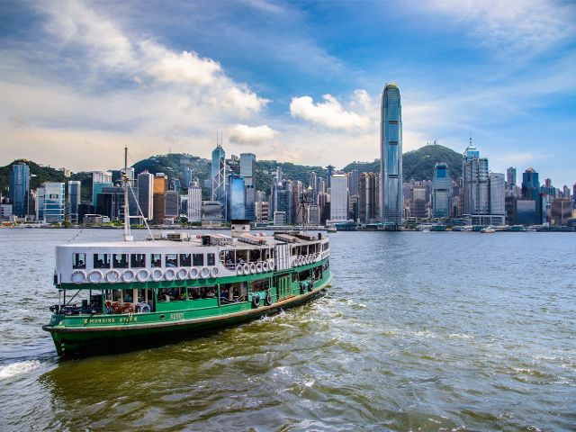
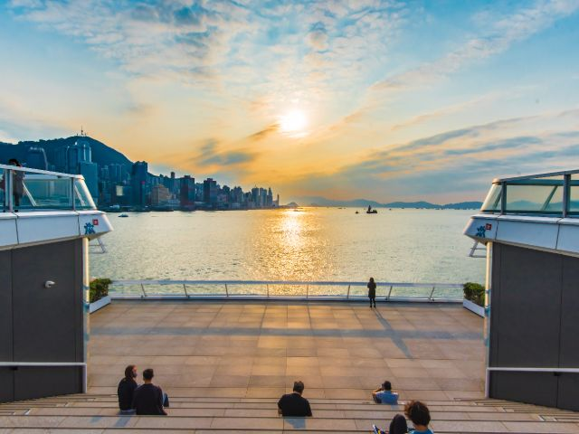
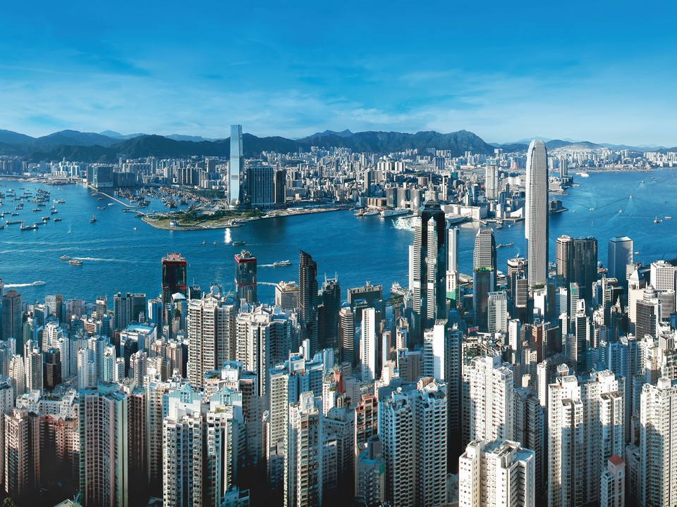
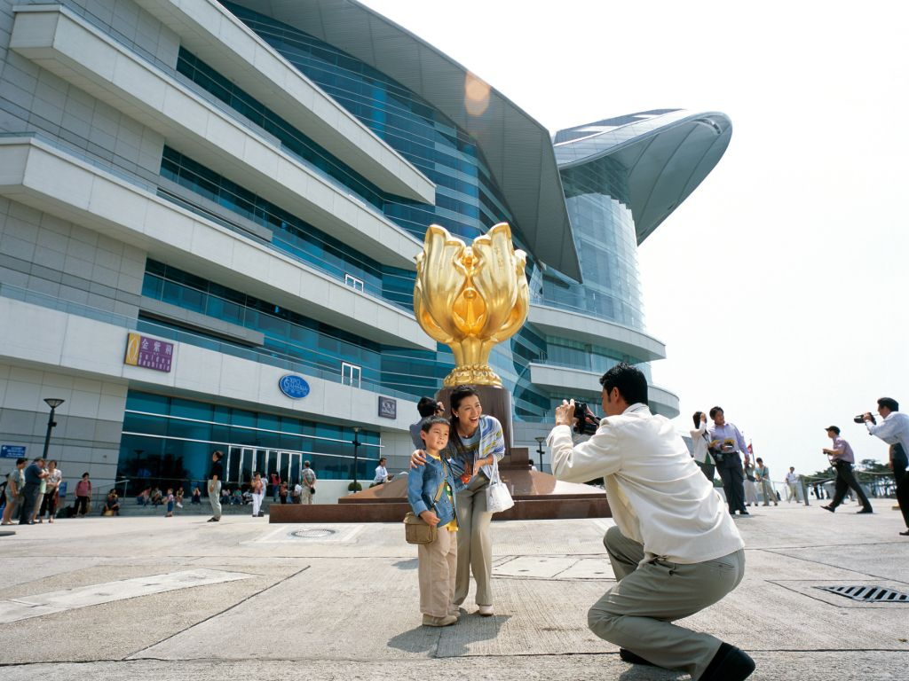
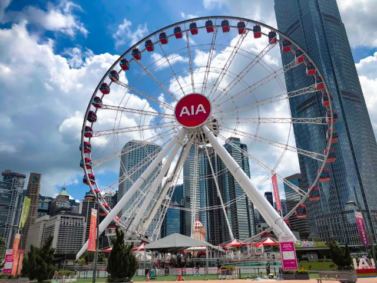
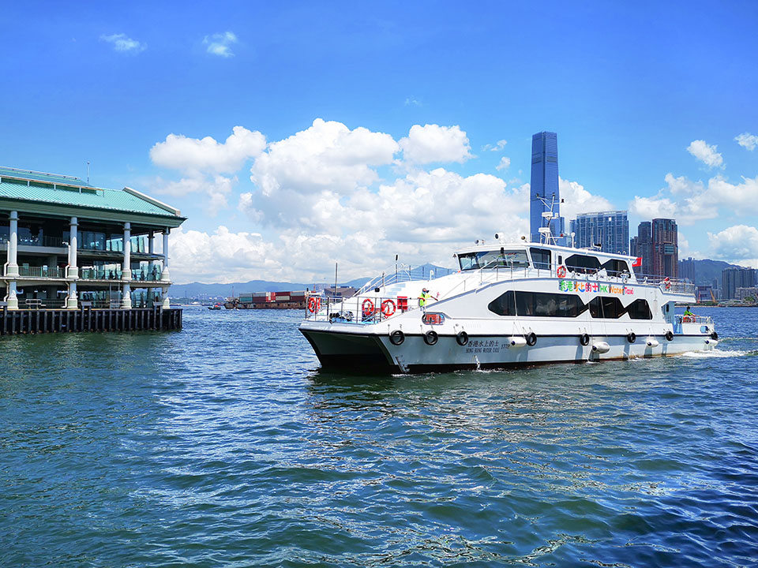
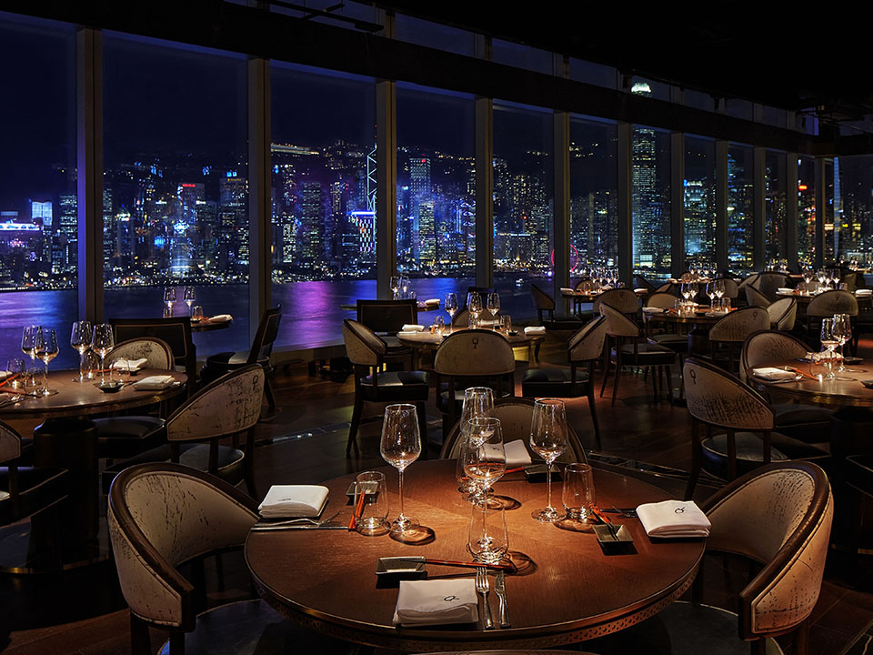
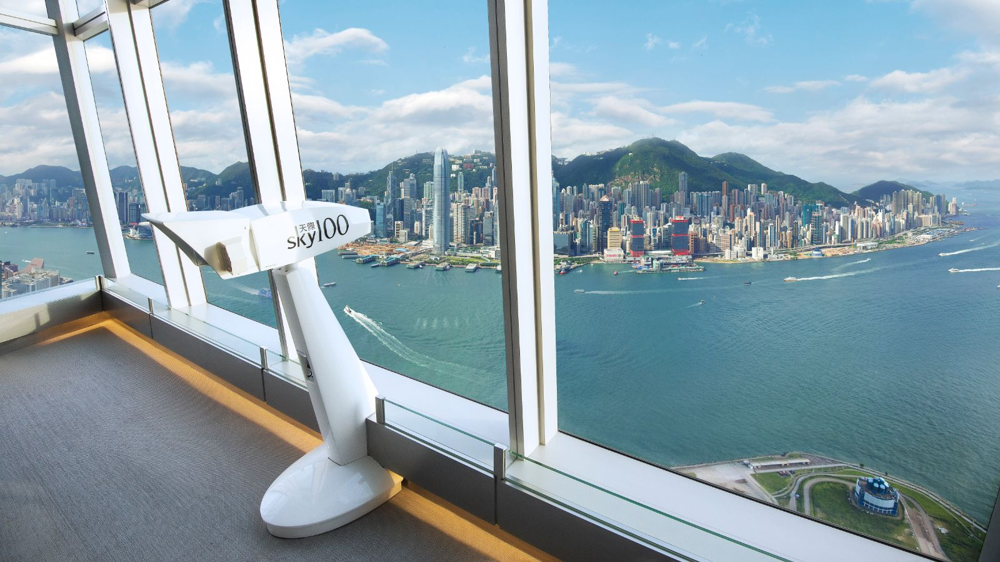

There is no attraction in the city that is more iconic than the skyline of Hong Kong’s Victoria Harbour. In fact, one
can say that the harbour was the very birthplace of the city itself. The deep waters between Hong Kong Island and the
Kowloon Peninsula are why a collection of fishing villages grew to become an international centre of trade. Today, the
harbour is still the city’s throbbing heart and its iconic skyline is also one of the world’s most stunning urban
landscapes. With such a skyline, it deserves to been seen at more than one angle.
Tsim Sha Tsui waterfront
The most classic view of the harbour is from the Tsim Sha Tsui waterfront. Here you can stand right in front of the
harbour and not only marvel at the topological and architectural spectacle of Hong Kong’s iconic skyline, but also
admire how the colourful lights from across the harbour dance on the waves. While you’re at the waterfront, head toward
Tsim Sha Tsui East to check out the Tsim Sha Tsui promenade, Avenue of Stars, Clock Tower, Hong Kong Cultural Centre and
enjoy 'A Symphony of Lights' in the evening.

'A Symphony of Lights'
What could make the harbour even more stunning? A multimedia light show! Every night at 8pm, iconic buildings from both
sides of the harbour unite to form a harmonious canvas for a sensational multimedia extravaganza, with a myriad of
searchlights, lasers, LED screens and lighting working in symphony to put together a nightly spectacle that transforms
the Hong Kong skyline into an outdoor audiovisual feast.

Star Ferry
As one of the oldest forms of transportation in Hong Kong, the Star Ferry has been faithfully carrying passengers across
the harbour for more than a century. Although cross-harbour road and rail tunnels now connect both sides of the harbour,
the Star Ferry still holds a dear place in locals’ hearts, providing a scenic way to cross the harbour that provides an
up-close view of our iconic skyline, and an experience that is reminiscent of the charms of old Hong Kong.

Ocean Terminal Deck
Located on the rooftop of Ocean Terminal’s five-storey extension building, opened in 2017, Ocean Terminal Deck is an
observatory deck surrounded by the sea that offers a 270-degree panorama of the harbour as well as breathtaking views of
Hong Kong Island and Kowloon. It is one of the best venues to enjoy Hong Kong’s sunset and evening views, while being
close to the many shopping and dining options of Harbour City.

The Peak
As the highest point on Hong Kong Island, The Peak has been Hong Kong’s most exclusive neighbourhood since historical
times and is also home to the city’s rich and famous today. But it is the view that makes The Peak one of the most
popular attractions in Hong Kong. By day, your eyes stretch across sparkling skyscrapers and the harbour all the way to
the green hills of the New Territories. In early evening, this panorama melts into pink and orange before reincarnating
as a dazzling galaxy of light, shimmering beneath you. And if you listen carefully enough, you can hear Asia’s world
city humming below.

Golden Bauhinia Square
For those who would like to experience the harbour with a taste of history, then the Golden Bauhinia Square is a must
visit! The bauhinia is the emblem of Hong Kong; the Forever Blooming Bauhinia Sculpture that sits on the promenade was a
gift from the Central Government to mark the 1997 handover of Hong Kong from Britain to China. Every day from
7:50–8:03am (except the first day of each month) is a flag-raising ceremony performed by Hong Kong police officers,
which is a nice way to start a day by the harbour.

Hong Kong Observation Wheel
Hong Kong Observation Wheel
Located on the Central Harbourfront is Hong Kong’s own Ferris wheel – the Hong Kong Observation Wheel. At 60 metres
high, it offers spectacular day and night-time views of the harbour. The wheel has 42 luxurious gondolas that can
comfortably seat eight passengers. Be sure to keep an eye out for events, drinks and snacks on the surrounding plaza.

Hong Kong Water Taxi
A harbour tour on the Hong Kong Water Taxi offers a unique way to experience the harbour. The weekend route passes by
the city’s most iconic attractions including Hong Kong Observation Wheel, International Financial Centre, the Tsim Sha
Tsui promenade, West Kowloon Cultural District and Kai Tak Cruise Terminal. Take in the spectacular cityscape after the
sun sets, as a laser and light show flashes across Hong Kong’s glassy buildings during 'A Symphony of Lights'.

Rooftop bars
Hong Kong’s rooftop bars not only offer some jaw-dropping views of the city, but impressive food and drink to match. Sit
down to a sophisticated evening of Japanese and Italian cuisines surrounded by floor-to-ceiling glass windows at Aqua.
Sitting high above Nathan Road, the terrace at Eyebar is also a top contender for one of the best vantage points in the
city. For one of the best cocktail and wine lists in town, head to Ozone on the 118th floor of the ICC. As the highest
bar in Hong Kong, and in the world, it offers a completely unobstructed view of western Hong Kong Island and Kowloon. On
Hong Kong Island, a luxurious but relaxed fine dining experience showcasing the dazzling skyline awaits on the 49th
floor of The Upper House at Salisterra.

sky100 Hong Kong Observation Deck
Finding a unique vantage point to see the Hong Kong skyline from a different perspective? Look no further than sky100
Hong Kong Observation Deck. Located on the 100th floor of the tallest building in Hong Kong, International Commerce
Centre, it is the highest indoor observation deck offering a 360° panoramic view of Hong Kong and its famous harbour.
Aside from the spectacular views, sky100 also offers a variety of sky-high experiences, including a VR Time Travel
experience in the Sky-High Tech Zone that brings you back to old Hong Kong, sky100’s Tales of Hong Kong, a 28-metre-long
multimedia story wall showcasing fascinating local tales and anecdotes, 'Love is in the Sky' light show with the
harbour’s famed nightscape as the backdrop, creating an unprecedented visual treat and Café 100 by The Ritz-Carlton,
Hong Kong offering a range of delectable delicacies to go along with the stunning view. And more fun awaits you at
sky100!
